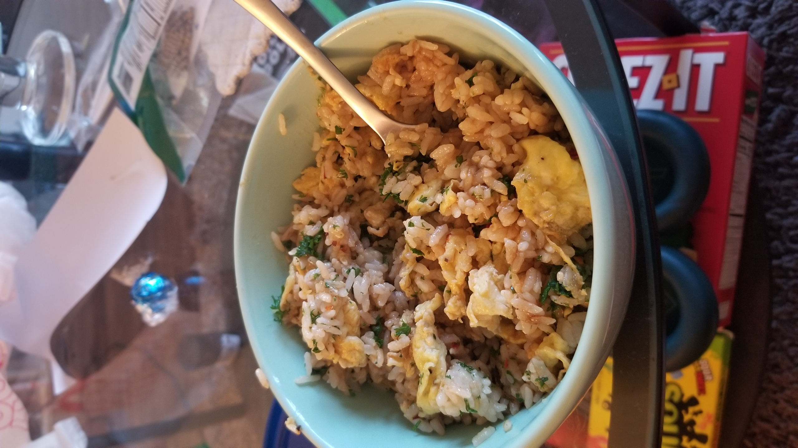

Idiot's Guide to Fried Rice
Fried rice is a very quick, versatile dish that is great at clearing out your fridge. It can be made with virtually any combination of proteins and veggies. But there are a few basics that are universally true for fried rice. I'll walk you through the basic steps of making any fried rice, then provide options for ingredients that I think work best.
You will need:
- Day-old rice
- Eggs
- A little bit of water, and a lid for whatever pan you're cooking on
- Soy sauce
- Some sort of herb to garnish (parsley, green onion, etc)
In my opinion, this is the bare minimum for fried rice. Day-old rice is crucial because it is drier than freshly made rice, and will not clump together as easily. The basic recipe is as follows:
- Place pan on high heat - use enough oil to at least coat the bottom, a little more doesn't hurt. I use a cast-iron but any pan should be fine. A big wok is ideal
- As the pan gets up to temperature, scramble 3 eggs in a bowl. Salt and pepper them after you're done. (about 3 eggs per serving, so adjust accordingly)
- Dice up your herb of choice.
- By now, the pan should be hot - a little bit of smoke should be rising from the oil. Put the eggs in first, they should cook very quickly.
- Remove the eggs after they're done cooking, OR just leave them in if you're lazy and don't mind your eggs browning a bit.
- Add in more oil if your pan is looking dry. Otherwise, add in the rice.
- Break apart the rice as much as possible with your spatula. The idea is to get individual grains, rather than big clumps of rice.
- If Your Rice Is Being A Little Bitch: Add a VERY SMALL amount of water to the pan and cover it with a lid. You want to steam it JUST enough so that the big, cold clumps of rice break up. If you add too much water, your fried rice will come out steamy and mushy. (Also, this is a good time to clean up; you can let it steam for around 1-2 minutes).
- Remove the lid. Add soy sauce, herbs of your choice, the eggs if you took them out, and whatever other garnishes you like. Stir around for another minute or two, then turn off the heat and let it finish cooking.
And that's basically the gist of it.

I added a bit too much water this time - you can see it's a little too clumpy. Still, you get the general idea.
This one I whipped up just last night is pretty simple. Just eggs, parsley, and for garnishes, I used sesame oil, chili flakes, garlic powder, and Tabasco hot sauce - mostly things I had lying around in my pantry. Fried rice is great, because you can pretty much use whatever you want. Just remember the general principles: cook protein first, take out/leave in depending on how lazy you are, add rice, steam just a tiny amount if your rice is stuck together, and then re-add proteins and garnish. Here's some ingredients that generally work well with this:
Proteins:
- Steak (thinly cut, or leftover)
- Chicken (thinly cut, or leftover)
- Bacon
- Fish (cook separately, and add before soy sauce)
- Tofu (likewise)
- Sausage
Veggies:
- Corn
- Frozen veggies (peas/carrot mixtures, etc)
- Onions
- Peppers
- Edamame
Garnishes:
- Garlic
- Ginger
- Hot sauce (sriracha is a good starting point)
- Sesame oil
- MSG
- Green Onion/Chives/Scallion
- Parsley
- Shallots
Click the sidebar to check out more content or return home.